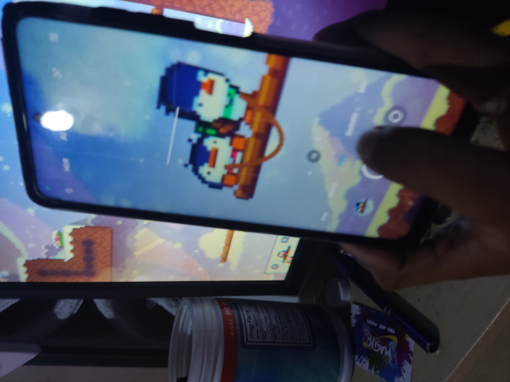
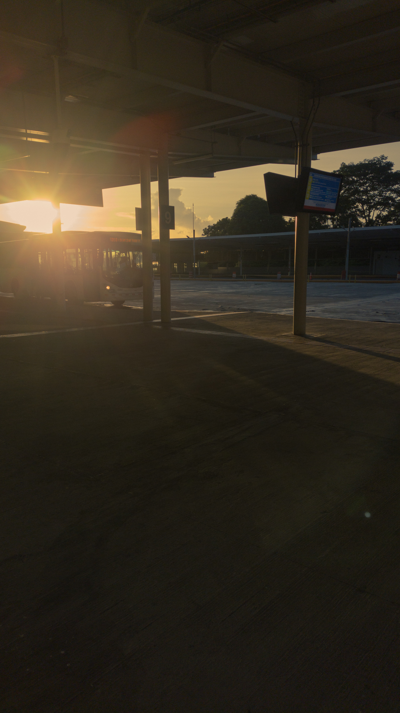

Intento de pagina
Soy una persona reservada, tranquila, empática y reflexiva. Valoro la sinceridad, la libertad y la tranquilidad, y prefiero las relaciones genuinas antes que las superficiales. Me gusta aprender, cuestionarme y comprender mejor el mundo y a mí mismo. Busco mejorar constantemente, desarrollar mis capacidades y superar mis propias limitaciones. Tengo metas claras: terminar mis estudios, adquirir nuevos conocimientos, alcanzar independencia y construir un futuro estable. Aunque a veces tengo inseguridades y dudas, procuro mantenerme fiel a mis valores y tomar mis propias decisiones. No busco lujos ni la aprobación de los demás, sino una vida tranquila, con propósito y en la que pueda sentirme orgulloso de quien soy, sin perder mi esencia.
Elementos visuales que tienen un significado en mi vida


* Nota: Agradecido por todos estos momentos simples, pero genuinos.
Quiero expresar mi más sincero agradecimiento a todas las personas que he conocido a lo largo de mi vida. A quienes me han acompañado en el camino y han dejado una huella valiosa en mí.
Cada interacción, conversación, momento difícil superado y vivencia compartida ha contribuido a formar la persona que soy hoy. Gracias por formar parte de esta historia.